BOOK I. PROPOSITIONS.¶
If two triangles have the two sides equal to two sides respectively, and have the angles contained by the equal straight lines equal, they will also have the base equal to the base, the triangle will be equal to the triangle, and the remaining angles will be equal to the remaining angles respectively, namely those which the equal sides subtend.
Given two straight lines constructed on a straight line (from its extremities) and meeting in a point, there cannot be constructed on the same straight line (from its extremities), and on the same side of it, two other straight lines meeting in another point and equal to the former two respectively, namely each to that which has the same extremity with it.
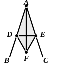
To bisect a given rectilineal angle.
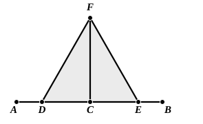
To draw a straight line at right angles to a given straight line from a given point on it.
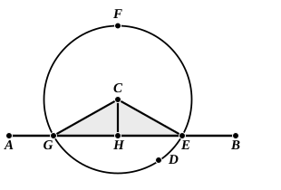
To a given infinite straight line, from a given point which is not on it, to draw a perpendicular straight line.
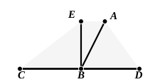
If a straight line set up on a straight line make angles, it will make either two right angles or angles equal to two right angles.
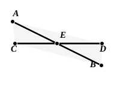
If two straight lines cut one another, they make the vertical angles equal to one another.
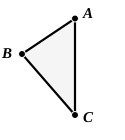
In any triangle the greater angle is subtended by the greater side.
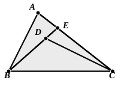
If on one of the sides of a triangle, from its extremities, there be constructed two straight lines meeting within the triangle, the straight lines so constructed will be less than the remaining two sides of the triangle, but will contain a greater angle.
Out of three straight lines, which are equal to three given straight lines, to construct a triangle: thus it is necessary that two of the straight lines taken together in any manner should be greater than the remaining one. [I. 20]
If two triangles have the two angles equal to two angles respectively, and one side equal to one side, namely, either the side adjoining the equal angles, or that subtending one of the equal angles, they will also have the remaining sides equal to the remaining sides and the remaining angle to the remaining angle.
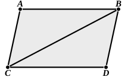
The straight lines joining equal and parallel straight lines (at the extremities which are) in the same directions (respectively) are themselves also equal and parallel.
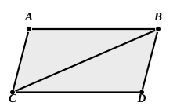
In parallelogrammic areas the opposite sides and angles are equal to one another, and the diameter bisects the areas.
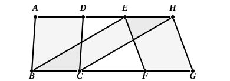
Parallelograms which are on equal bases and in the same parallels are equal to one another.
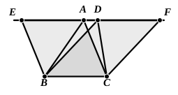
Triangles which are on the same base and in the same parallels are equal to one another.
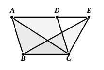
If a parallelogram have the same base with a triangle and be in the same parallels, the parallelogram is double of the triangle.
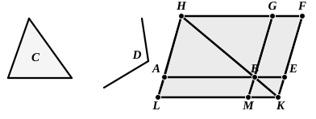
To a given straight line to apply, in a given rectilineal angle, a parallelogram equal to a given triangle.
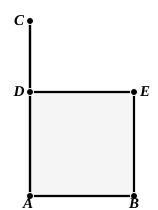
On a given straight line to describe a square.
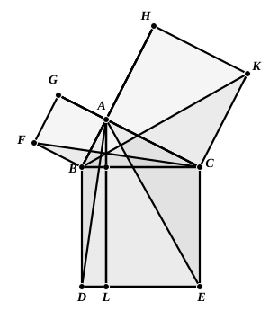
In right-angled triangles the square on the side subtending the right angle is equal to the squares on the sides containing the right angle.